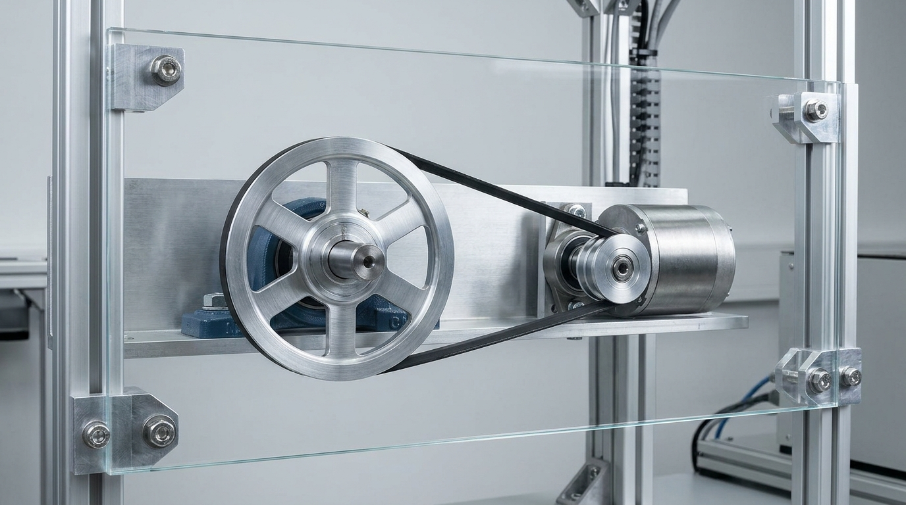
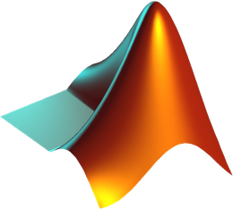

01 · Sirkulasi
01 · Sirkulasi
Pompa Celup Wasser WD-101E
1 unit · 220 V / 50 Hz, daya input 100 W. Menyedot air dari tangki penampung bawah Ø 520 mm dan mendorongnya secara kontinu naik menuju bak penenang atas.
Lihat di Diagram ▸Prototipe pembangkit listrik mikro-hidro sirkulasi tertutup skala laboratorium — mengubah aliran air ber-head rendah menjadi listrik tanpa bendungan besar.
Kami merancang ulang cara memanfaatkan aliran air ber-head rendah. Di atas rangka laboratorium 2,0 × 0,8 meter dengan sirkulasi tertutup, Vortex Hydro memfokuskan energi kinetik aliran ke kincir 6 sudu dan transmisi step-up 1:4 untuk membangkitkan listrik DC secara bersih tanpa bendungan besar.
Enam komponen utama pembentuk siklus aliran tertutup dan konversi energi listrik pada simulator Vortex Hydro.
01 · Sirkulasi
1 unit · 220 V / 50 Hz, daya input 100 W. Menyedot air dari tangki penampung bawah Ø 520 mm dan mendorongnya secara kontinu naik menuju bak penenang atas.
Lihat di Diagram ▸ 02 · Turbin
02 · Turbin
Diameter 330 mm dengan lebar sudu 250 mm pada poros utama stainless steel Ø 30 mm. Menangkap energi kinetik aliran dari saluran miring untuk menghasilkan torsi mekanik.
Lihat di Diagram ▸ 03 · Pembangkit
03 · Pembangkit
1 unit generator magnet permanen yang dipasang di zona kering di balik sekat pelindung cipratan, mengubah putaran mekanis turbin menjadi arus listrik DC stabil.
Lihat di Diagram ▸
04 · TransmisiSistem step-up mekanik menggunakan pulley poros Ø 270 mm ke pulley generator Ø 67,5 mm untuk menaikkan kecepatan putaran empat kali lipat pada zona kering.
Lihat di Diagram ▸ 05 · Beban Output
05 · Beban Output
2 unit lampu LED 12 V berdaya 5 W per unit (total beban 10 W) yang disuplai melalui baterai 12 V dan pengontrol pengisian sebagai indikator langsung daya terbangkit.
Lihat di Diagram ▸ 06 · Perpipaan
06 · Perpipaan
1 set jalur pipa dorong berdiameter ±45 mm di atas rangka 2,0 × 0,8 m lengkap dengan flow meter digital untuk memantau debit aliran menuju headbox.
Lihat di Diagram ▸Ringkasan komponen utama pengubah aliran air menjadi energi listrik DC pada sistem sirkulasi tertutup Vortex Hydro.
Saluran terbuka berbahan akrilik transparan yang terdiri dari bak penenang hulu (500 mm), bidang luncur miring (1016,97 mm), dan ruang keluar hilir (200 mm) untuk mengarahkan aliran air ke kincir.
Rotor turbin dengan 6 bilah sudu melengkung di dalam saluran miring yang menangkap dorongan aliran air dan mengubahnya menjadi putaran pada poros utama stainless steel Ø 30 mm.
Roda pulley penggerak Ø 270 mm di sisi luar dinding saluran yang terhubung sabuk V-belt ke pulley kecil Ø 67,5 mm untuk melipatgandakan putaran empat kali lebih cepat.
Unit generator magnet permanen arus searah berukuran kompak di zona kering ujung saluran yang mengubah putaran cepat dari pulley menjadi energi listrik DC.
Wadah silinder berkapasitas 60 liter tepat di bawah bukaan keluar saluran yang dilengkapi pompa celup 100 W untuk menjaga siklus perputaran air secara tertutup.
Simulasi fluida, pemodelan 3D, perhitungan matematis, dan pengembangan web terintegrasi.



Air dipompa dari tangki penampung ke headbox, ditenangkan, meluncur melalui saluran miring ke kincir 6 sudu, lalu jatuh kembali dalam siklus tertutup.
Silinder penampung air sirkulasi Ø 520 mm. Air bekas memutar kincir jatuh kembali ke tangki sehingga sistem tertutup dan hemat air.
Pompa Wasser WD-101E (100 W) menyedot air dari tangki bawah dan mendorongnya naik menuju bak penenang atas.
Pipa Ø 45 mm mengalirkan air naik di sisi rangka, dilengkapi flow meter untuk membaca debit aliran (L/s).
Menenangkan turbulensi pancaran pompa melalui sekat internal agar aliran masuk ke saluran menjadi stabil dan halus.
Saluran akrilik yang menyempit dari 0,416 m ke 0,28 m untuk memfokuskan energi aliran tepat ke sudu kincir.
Kincir Ø 330 mm (lebar sudu 250 mm) menangkap tumbukan aliran air dan memutar poros utama stainless Ø 30 mm.
Air yang telah memutar kincir dialirkan turun kembali ke tangki penampung untuk siklus berikutnya.
Dipisahkan sekat pelindung cipratan. Pulley step-up 1:4 memutar Generator DC XD 3240 untuk menyuplai 2 lampu LED 12 V / 5 W.
Persiapan, kolaborasi lintas disiplin, eksperimen laboratorium, dan kisah nyata di balik perancangan hingga uji coba prototipe Vortex Hydro.
Satu perjalanan kolaboratif lintas pengurus inti dan tujuh divisi teknis.
Simulator PLTA mikro-hidro berbasis pusaran air skala laboratorium yang dirancang, dibangun, dan diuji secara mandiri oleh mahasiswa Universitas Negeri Malang.
Karena aliran sungai tidak mungkin dibawa ke laboratorium kampus, pompa Wasser 100 W menyirkulasikan air secara kontinu di atas rangka 2 × 0,8 m.
Tidak. Konsep turbin pusaran dirancang khusus untuk memanfaatkan aliran ber-head rendah tanpa bendungan besar.
Pada versi situs statis, Dashboard memakai mesin simulasi prototipe di browser untuk mendemonstrasikan antarmuka pemantauan sambil menunggu integrasi sensor prototipe fisik asli.
Debit aliran (Q), tinggi jatuh (H), serta efisiensi mekanis turbin dan generator (η) sesuai persamaan P = ρ·g·Q·H·η. Anda bisa mencobanya lewat Kalkulator Daya di tombol alat pojok kiri bawah.
Buka ikon kunci Login Admin pada Toolsbar pojok kiri bawah, lalu masuk menggunakan akun Administrator terverifikasi. Dashboard dan Riwayat Chat AI hanya dapat diakses oleh role admin.

Kami adalah perancang — membangun sistem pembangkit listrik mikro-hidro pusaran air di Fakultas Vokasi, Universitas Negeri Malang. Kolaborasi lintas disiplin menjadi inti kami, menyatukan pengurus inti dan tujuh divisi teknis dari simulasi fluida, mekanikal, kelistrikan, hingga perangkat lunak.
Pantau telemetri prototipe turbin pusaran dan riwayat percakapan Vortex Hydro AI dalam satu ruang kerja terverifikasi.
| Waktu | Admin | Aksi | Target |
|---|---|---|---|
| Memuat audit log… | |||
Ketik minimal 2 huruf. Pintasan: Ctrl+K atau tombol /.